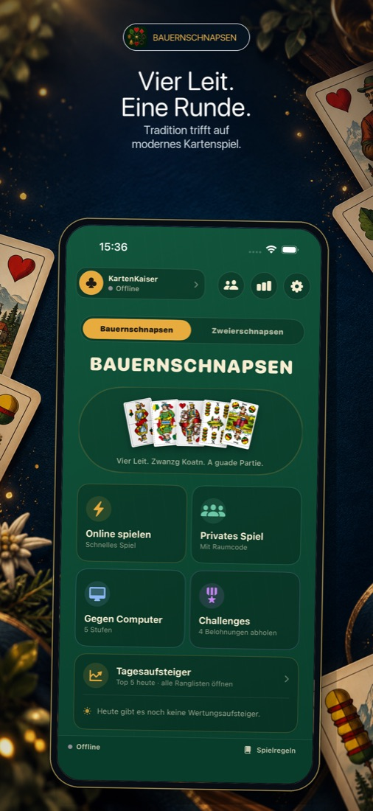
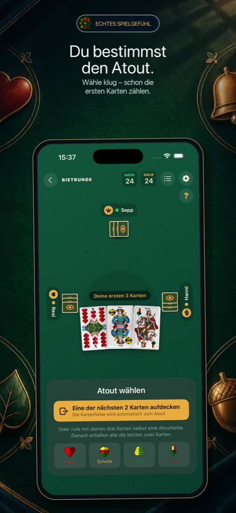
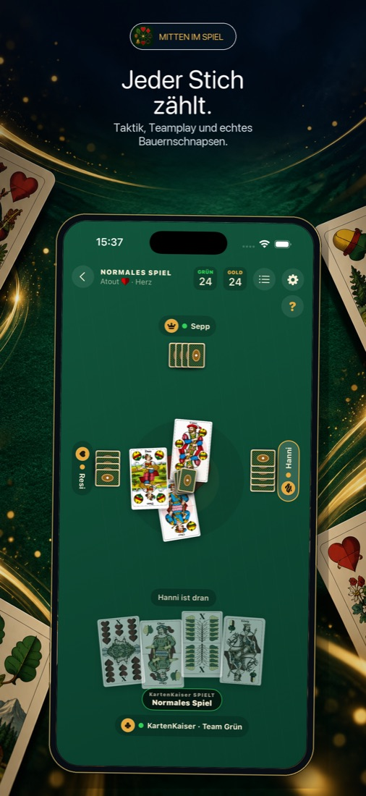

Bauernschnapsen
Das österreichische Kartenspiel für vier, jetzt auf dem iPhone. Zum Üben gegen den Computer, im privaten Raum mit Freunden oder online gegen Spieler aus aller Welt.
Bald im App Store Kostenlos für iPhone – demnächst verfügbar


Alles, was eine gute Runde braucht
Sechs Computer-Stufen
Von Anfänger bis Legende. Mit jedem gewonnenen Match schaltest du die nächste Stufe frei, bis du gegen einen Gegner spielst, der das Endspiel exakt durchrechnet.
Mit Freunden spielen
Erstell einen privaten Raum und teil den sechsstelligen Code, oder lade Freunde direkt aus deiner Freundesliste ein. Ob iPhone oder Android, ihr spielt am selben Tisch.
Online & Rangliste
Die automatische Spielsuche findet dir drei Mitspieler. Setz Coins ein, sammle Wertung und miss dich in der Rangliste mit anderen Spielern.
Zwei Spielarten
Bauernschnapsen zu viert oder Zweierschnapsen. Beide teilen sich dieselbe Fortschrittsleiter.
Faire Karten
Jede Aktion wird geprüft, und fremde Handkarten sind im Netzwerk nie sichtbar. Hier wird nicht geschummelt.
Regeln eingebaut
Du kennst Bauernschnapsen noch nicht? Die Regeln sind direkt in der App erklärt, und die Proberunde funktioniert auch ohne Internet.